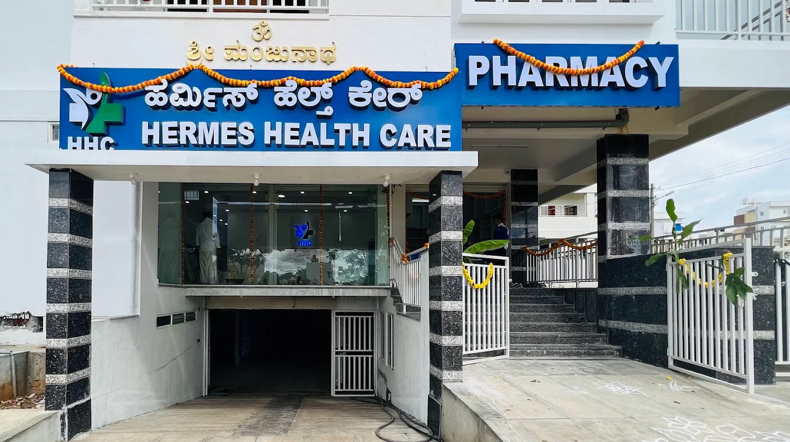
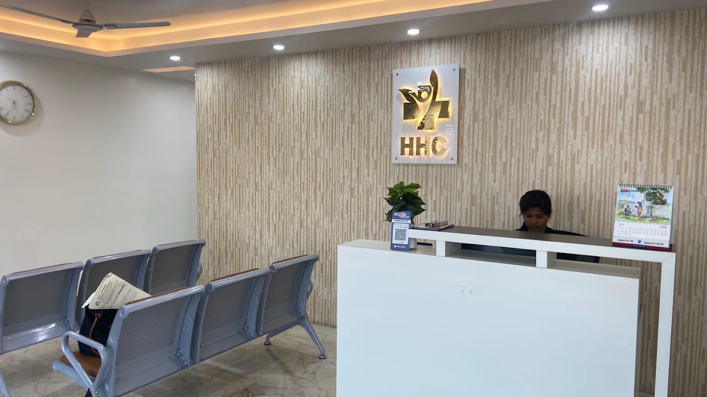
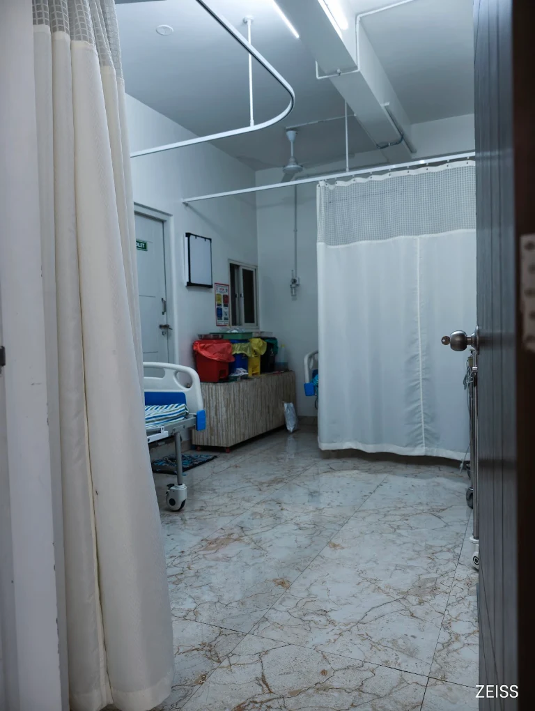
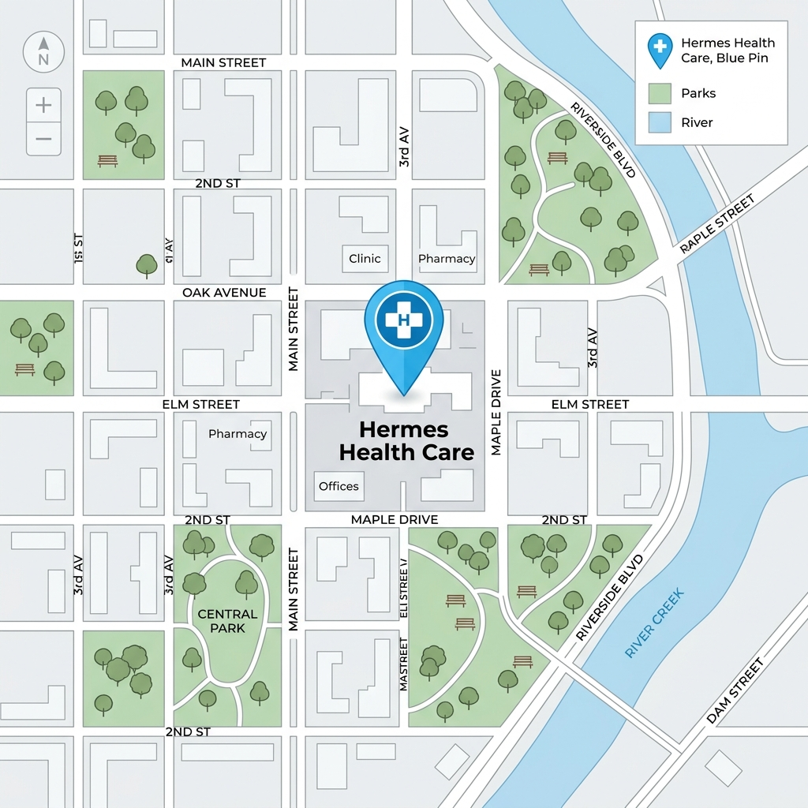

Expert doctors. Advanced diagnostics. Trusted care for you and your family.
Multidisciplinary services with a patient-first approach.
Comprehensive clinical support, diagnostics, and patient-first care facilities.
Dedicated multidisciplinary specialists committed to providing compassionate, high-quality medical care.
Specialist in Diabetology. Expert in glycemic management, HbA1c regulation, diabetic complications screening, and clinical metabolic health.
View DepartmentSpecialist in General Medicine. Focused on diagnosis, screening, and chronic disease management.
View DepartmentSpecialist in bone, joint, and spine care, offering recovery and functional management plans.
View DepartmentSpecialist in advanced manual therapy and musculoskeletal rehabilitation.
View DepartmentFront-Desk & Coordination
Dakshayini • Bhavya
Day Care & Nurse Supervision
Shruthi • Nagaraj
Medication & Dispensing
Umme Saniya
A highly hygienic, modern environment optimized for patient comfort and recovery.




Ullal, Sir M Vishveswaraya Layout, Jnana Ganga Nagar, Bengaluru, Karnataka 560110
"Good doctors, responsible staff, quality equipment & well maintained facilities."
"Very prompt service... All services @ affordable price under one roof... Excellent place for health care."
"Good doctor, good treatment, very good atmosphere... I suggest to all."
We maintain the highest clinical standards to ensure accurate diagnosis, comfortable procedures, and successful recovery outcomes.
Consult with registered and certified doctors holding post-graduate medical qualifications and years of clinical hospital experience.
Receive scientifically validated, peer-reviewed therapy plans designed around the latest international medical guidelines.
We prioritize your questions, values, and comfort, ensuring you never feel rushed during physical examinations or consultations.
We deliver outpatient consultations, diagnostics, and daycare procedures to residents in nearby neighborhoods:
Have questions about our clinic? Browse answers to common patient inquiries:
Hermes Health Care in Ullal, Bengaluru offers General Medicine, Orthopaedic Care, Diabetes Management, Advanced Physiotherapy, In-House Diagnostics (pathology lab, ECG, X-Ray), Day Care Recovery, Gynecology & Fertility, Gastroenterology, and Ophthalmology.
Yes, Hermes Health Care is open daily (Monday through Sunday) from 9:00 AM to 9:30 PM, providing doctor consultations, diagnostics, and physiotherapy on weekends.
You can book an appointment by calling 063608 55615 or messaging our clinical desk on WhatsApp at +91 63608 55615.
We are located at Sir M Vishveswaraya Layout, Ullal, Jnana Ganga Nagar, Bengaluru, Karnataka 560110.
Yes, we feature a fully equipped in-house pathology and biochemistry lab providing Complete Blood Counts (CBC), sugar check-ups, lipid profiles, thyroid screenings, urine pathology, and fast digital reports.
Yes, our team includes highly qualified female doctors, including Dr. Monisha S for General Medicine and Dr. Asha Chandrasekar for Obstetrics, Gynecology, and reproductive medicine.
Yes, we coordinate home sample collection services for blood tests and health screenings across Ullal, Jnana Ganga Nagar, Kengeri, Nagarbhavi, and RR Nagar.
Yes, we perform 12-lead digital ECG testing and 24/48-hour continuous ambulatory Holter monitoring in-clinic for cardiovascular screening.
Our daycare unit offers post-operative recovery, IV antibiotic administrations, hydration therapy, suture removals, wound care dressings, and minor surgical procedures under local anesthesia.
Yes, our Orthopaedic department under Dr. Kushal Raghavendra and Dr. Santosh H R treats osteoarthritis, slipped discs, joint pains, and fractures, coordinated with our advanced physiotherapy rehabilitation unit.
Yes, we have convenient patient parking spaces directly at our clinic entrance for two-wheelers and cars.
Yes, Dr. Dakshayini is our eye specialist, providing vision tests, computer strain checks, glaucoma management, and cataract screening.
Our General Surgeon Dr. Harish Kumar Jain performs outpatient excisions of lipomas, sebaceous cysts, ingrown toenails, skin lesions, and minor abscess drainages.
We serve residents in Ullal, Jnana Ganga Nagar, Rajarajeshwari Nagar (RR Nagar), Kengeri, Nagarbhavi, SMV Layout, and along Mysore Road, Karnataka.
We offer daily clinic consultations from 9:00 AM to 9:30 PM. For after-hours assistance or urgent daycare needs, please call our primary number 063608 55615 immediately.
Take control of your health. Consult our experienced medical specialists in Ullal, Bengaluru for expert diagnostic and recovery pathways.